Oh wtf its august! Did i forget about this until now? Who can say, time is meaningless stfu i make the rules ive been busy! I moved! Im breaking down boxes! And trying to finish moving all the last bits and then tidying anyway idk lets start
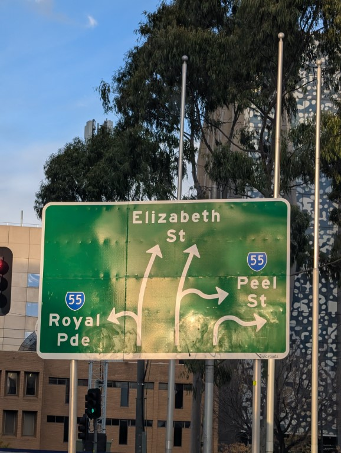
Started the month off in melbourne, this sign gave me anxiety and i wasnt driving
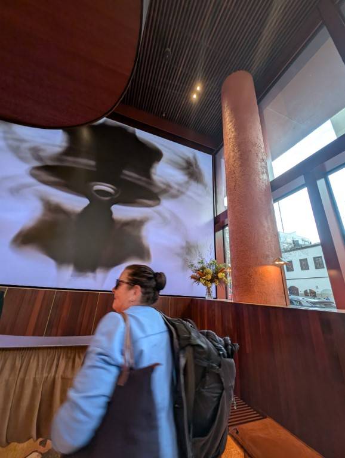
Stayed at a fancy hotel with my mum and they had a big screen, and also you had to use your wooden keycard to call an elevator that tells you which one to get into i loved it
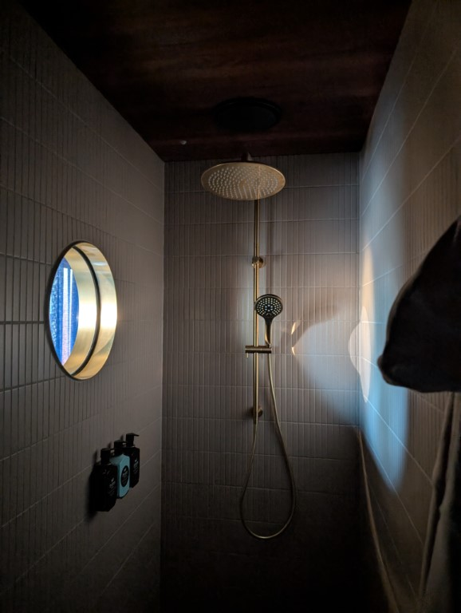
The shower also had a porthole which was awkward but also nice
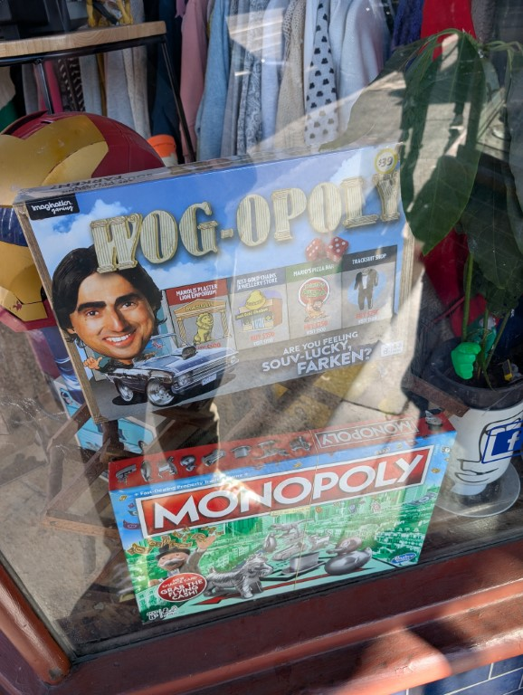
Went opshopping and saw this fuckin thing
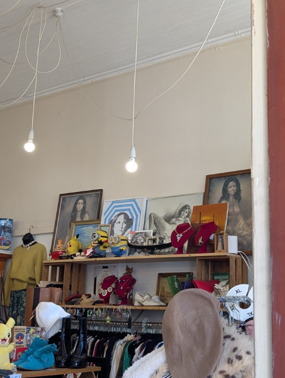
And also these, my mum and i were somewhat in shock because this is the same artist as the painting my grandfather had above his bar for the last 30 years and seeing other ones in the wild was outstanding and emotional?
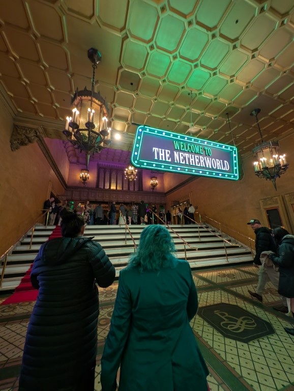
Finally in melbourne went to see beetlejuice, saw it with my mum because she always went on about how she loved the movie growing up so i had to bring her, i fuckin loved it and was openly crying during home once i realised its lydia hitting acceptance its beautiful
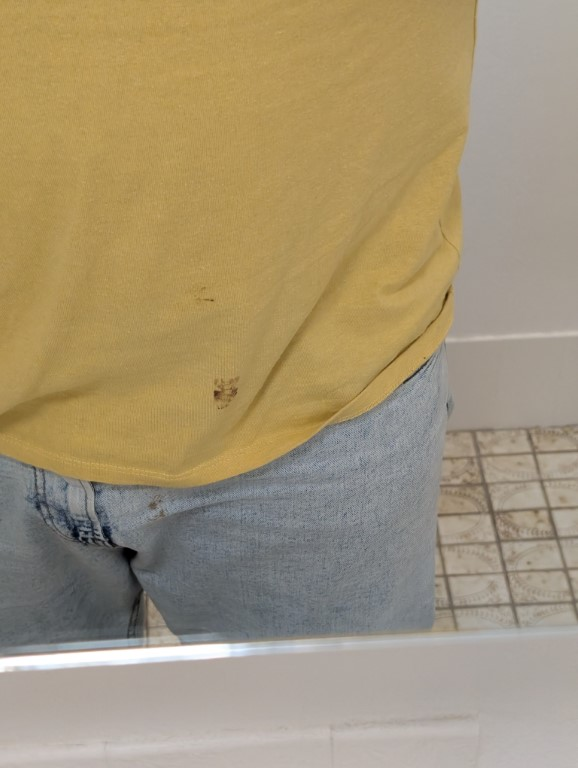
Excuse the crotch pic but i saw superman and ate mini m&m’s and was like “dang these are hard to eat” got home and realised i had at least 2 squished into my shirt and jeans
I sat outside my building waiting for a frined to pick me up and my gay neighbour came by and said i looked good and it was an complement i still am living by
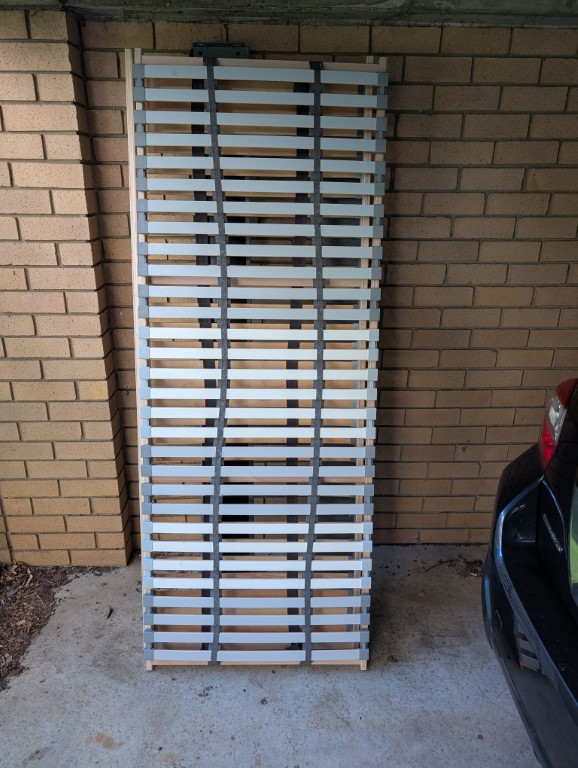
Finally dealt with my ikea bed, it sucked! Its bed head was basically non-existance and these slats. These fucking slats took me like 4 hours to put together. And they fucking suck for a memory foam mattress. They are so soft that the mattress oh man it stunk, i have an normal koala one now and its so much better
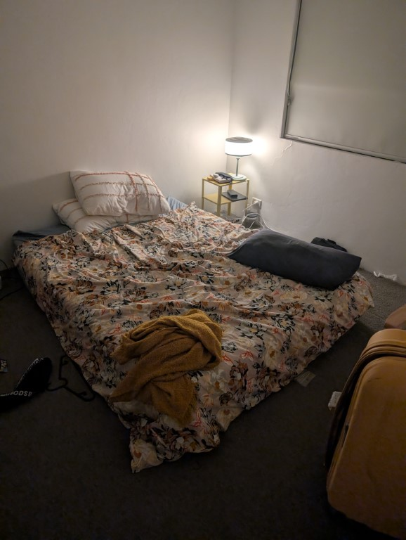
Lived the sad single mans existence for 2 weeks and slept on a mattress on the floor and it was strange
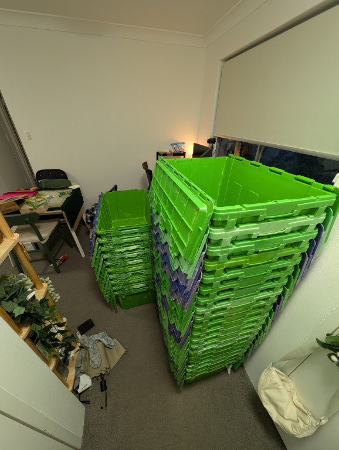
Moving boxes! These things ruined my life (not really they were wonderful but my apartment was not big enough for this) also i was up at 5:15 because they would arrive between 6 and 9. They arrived at fucking 5:45
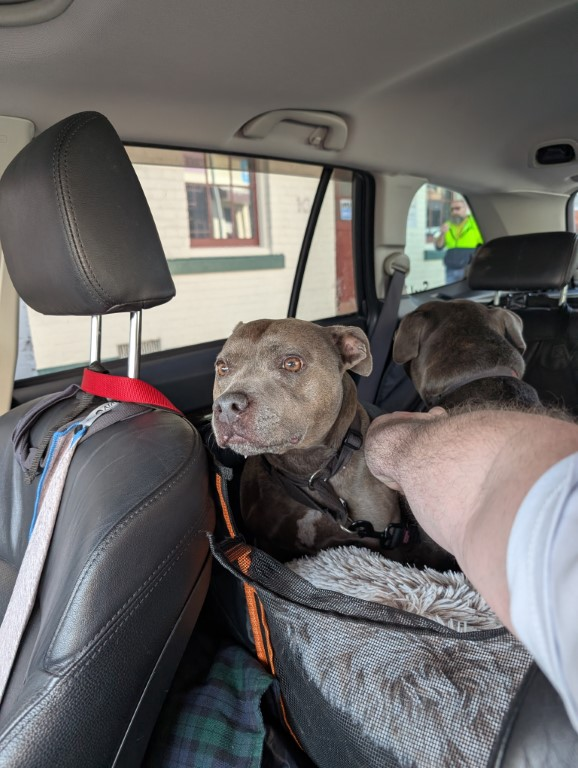
For my mums birthday we went up to my grandparents house in the country and she brough along her friends dogs because they were having a 21st birthday and one of these dogs has worse anxiety than me
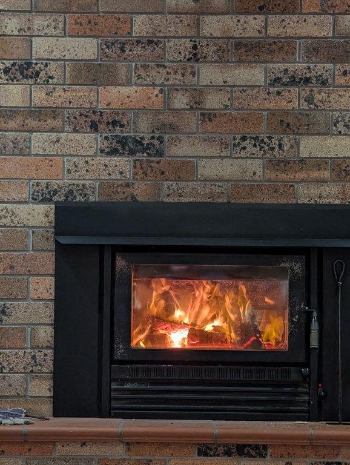
Starting a fire rules, also we listened to the hottest 100 aussie triple j thing while we ate dinner and played pool and the app/website for triple j suck or just hated country wifi but it was such a good finale few songs - veronicas being so high up ripped
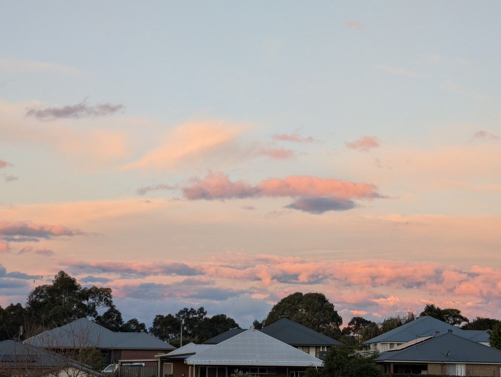
The sunsets in the country are just so pretty? Im gonna miss going up here
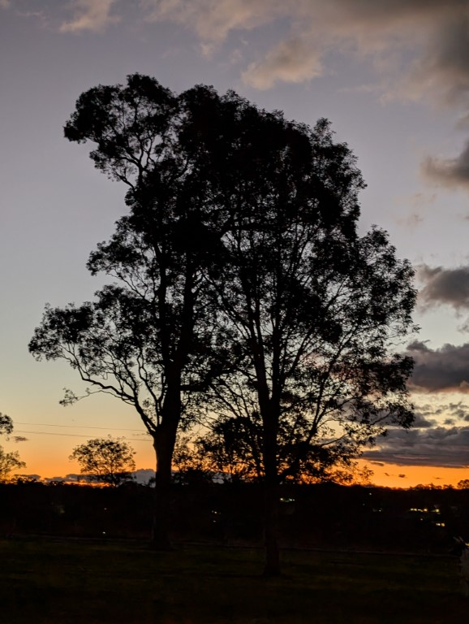
Like ah its just so nice
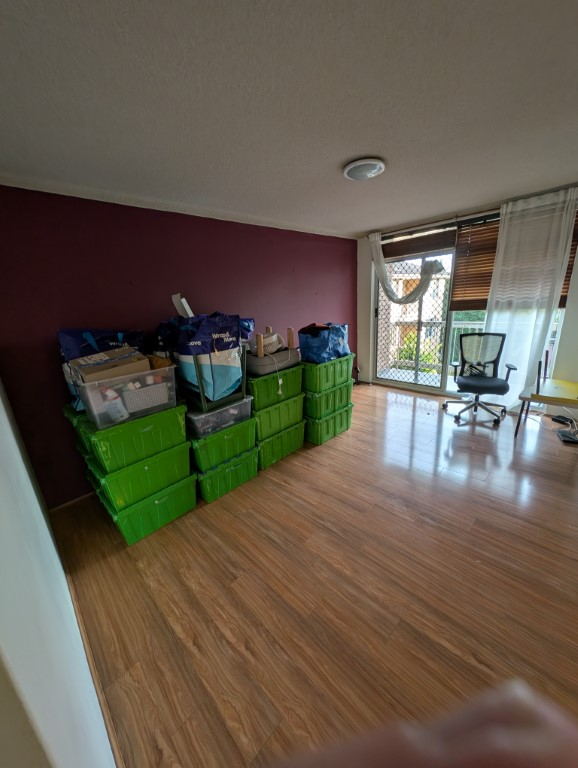
And finally, movers did everything in my apartment in under 3 hours and im so thankful for them because holy shit it wouldve killed me to do it
https://www.motherjones.com/politics/2020/10/i-called-everyone-in-jeffrey-epsteins-little-black-book/ i just wanna share this, it was a fun read and the journo just going through every name on the list is sorta hilarious
Fucking hell moving was stressfull, my desk is still not setup and work finally let me do some coding but its also stressful and this morning at 10am i was ready to just sign off because i had 5 different problems lumped on me immediately anyway this month im gonna relax. And also try to stop having piles of stuff anywhere, and set up my tv, and my desk. I wanna play peak. Anyway i don't have anything more to say